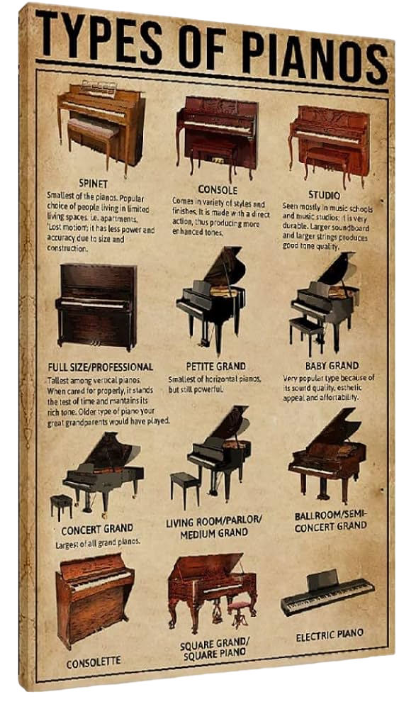

Piano
İşlevine Göre Piyano Çeşitleri
Bu piyano çeşitleri tamamen yer aldığı türün çalışma prensibine göre sınıflandırılmıştır. Bu maddemizde
belirttiğimiz türler piyano satın almaya karar verdiğiniz zaman ilk belirlemeniz gereken özelliklerden
oluşmaktadır. Her ne kadar bir kaçı günümüzde yaygın olarak kullanılmasa da isteğinize bağlı olarak bu
piyanoları 2. el olarak satın alabilirsiniz. Gelelim işlevlerine göre piyano çeşitleri sıralamasına ve ardından
detaylandırmaya;

- Duvar (Konsol) Piyanosu
- Elektronik (Dijital) Piyano
- Kuyruklu Piyano
- Pnörmatik Piyano
- Mekanik Piyano
- Hazırlanmış (Prepared) Piyano